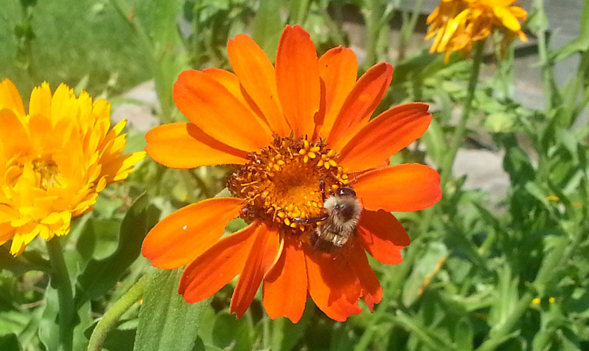

Nursery Stock from Little Bird Gardens
Deciduous Trees
Our landscape jobs sometimes help us acquire good quality merchandise at a very affordable price and these end-of-season deals can be passed on to you Our Friends.
The best part about these prices is that they include delivery. We even offer affordable rates for installation.
Now is the time to shop.
Login/Signup
| Plant Name | Description | Plant Size | Number | Cost per unit | Quantity Ordered |
|---|---|---|---|---|---|
| River Birch | A good tree choice for moist locations with a large growth habit having peeling bark of a copper color. | 6 - 7 ft | 12 | $150 | |
| Red Bud | This tree has a loose growing habit bearing bright purple blossoms in the spring. | 5 - 6 ft | 12 | $125 | |
| Silver Maple | A member of the Maple family. This tree has a light green foliage in summer and a bright yellow foliage into late fall. | 5 - 6 ft | 15 | $155 | |
| *** FREE DELIVERY ON ALL MATERIALS FOR LOCAL ORDERS WITHIN A 50 MILE RADIUS *** | |||||